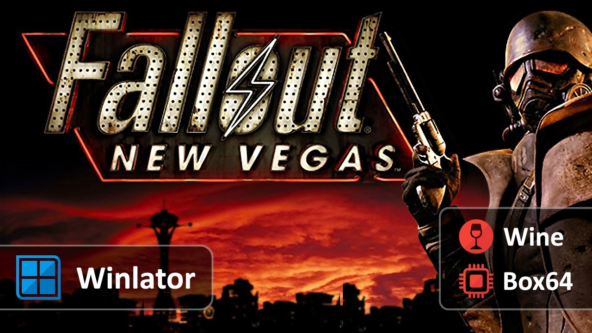

Winlator 值不值得折腾？把时间和硬件这两笔账算明白
它是免费的，但折腾它花的时间和可能换手机的钱不是。本文按轻度、主力、重度三档使用强度，算清楚这笔"隐性付费"到底值不值。
它到底值不值得折腾？这是我把三个旧容器删了又重建、换了两次图形驱动、对着屏幕盯了半小时黑块之后，终于坐下来认真问自己的问题。
先把一件事说清楚：Winlator官网上写得明明白白——这款应用本身是免费的，源码公开在 GitHub，巴西开发者 brunodev85 牵头，社区贡献者一直在加功能、修兼容。应用本体不收费、没有内购、没有解锁关卡、没有会员订阅。你装上去就能用全部功能——这一点先说死，免得读者看完以为有什么隐藏付费墙。
但免费不等于零成本。搭建环境花的时间、为了流畅跑可能换手机的钱、反复调参数消耗的耐心，这些才是真正的账。按付费决策账本的规矩，分三档人算。
先拆解它到底给什么
免费版给的东西，可以用三层翻译架起来的那套架构来概括：Wine 转 Windows 系统调用、Box86/Box64 实时转 x86 指令、Mesa 驱动加 DXVK 把 DirectX 画面送到手机 GPU 上。三层叠起来，Windows 程序以为自己在一台真正的电脑里跑，实际上每一条指令都在手机上被即时转译。
这套架构带来几个硬边界：
第一，它不依赖网络。装好容器之后离线也能跑，这是和云游戏、串流媒体最本质的区别——画面在你手机本地算，不是远端服务器算完传给你。断网不影响运行，这一点对地铁上、老家没网的场景是刚需。
第二，性能有折损。指令翻译本身要吃性能，旗舰骁龙机型大概能流畅跑中等强度的 3D 游戏，天玑和 Mali 芯片要看驱动适配，麒麟芯片 Vulkan 支持不完整，预期放低。
第三，它不是开箱即用。装好应用之后必须先建容器——一个隔离的 Windows 环境。容器怎么建、参数怎么选、图形驱动挑 Turnip 还是 Vortek、DX 包装器开不开 DXVK，这些选项每一项都能影响最终体验。
算账：三档用户的隐性投入
轻度用户：偶尔想玩几个老游戏
这档人的典型画像：手机是两年前买的旗舰或次旗舰，从下载装好后就是为了跑两三个 Windows 老 RPG——比如《辐射新维加斯》《上古卷轴5》，或者一些没有安卓版的独立游戏。

免费版够不够？完全够。Winlator 的免费版没有功能阉割，容器数量也不限。轻度用户的投入集中在搭建成本：跟着图文教程建一个容器（大约 15 到 30 分钟）、装一个驱动（Turnip 对骁龙机型是默认的，不用纠结）、装游戏本体（这个看游戏大小，10 分钟到半小时）。
之后的时间成本很低。容器建一次就不用动了，每次玩直接进，和打开一个安卓游戏没有本质区别。按一个月玩 10 小时算，搭建时间摊下来大约每小时 2 到 3 分钟，完全可以接受。
硬件方面，两年前的骁龙 8 Gen 2 或天玑 9200 跑《辐射新维加斯》这类游戏，调到中等画质能稳定 30 帧以上，散热做好不会降频。这一档不需要为了 Winlator 换手机。
主力用户：每周固定有几个晚上想玩
这档人的典型画像：手机是去年的旗舰，Winlator 是他们通勤路上、睡前两小时的主要娱乐方式。玩的游戏不止一个，可能同时跑三五个容器，有新游戏出来总想试试能不能跑。
免费版还是够，但时间投入开始显著。主力用户会遇到几个瓶颈：
第一，容器参数要反复调。调得动Winlator文档里有参考思路——不同游戏对图形驱动、DX 包装器、Box64 预设的组合要求不一样——A 游戏用 Turnip 加 DXVK 流畅，B 游戏可能必须换 VirGL 加 WineD3D 才能进。每加一个新游戏，可能要花 10 到 20 分钟试参数。
第二，散热管理变成必修课。主力用户长时间玩，手机发热降频是大概率事件。这意味着要么备一个散热背夹（几十块钱的事），要么接受几分钟后掉帧。散热背夹属于边际成本——有了之后所有游戏都受益，不是为 Winlator 单独花的，但确实是因为 Winlator 才需要买。
第三，官方语言没有简体中文。界面只有英语、葡萄牙语、俄语三个选项。主力用户每天操作容器管理、Wine 设置、输入控制这些菜单，记不住英文术语的话可以装汉化包，但汉化包是第三方修改，涉及账号登录（比如 Steam 游戏）的场景建议用原版环境。常用的几个英文词——Containers（容器管理）、Graphics Driver（图形驱动）、DX Wrapper（DX 包装器）——记三次就熟了，真正有语言障碍的是游戏内的中文乱码问题，这个调容器字体和区域设置有时能缓解，但别抱根治的希望。
按每周玩 6 小时算，主力用户每月调参数和解决问题的时间大约 4 到 6 小时。这个时间成本要不要付，取决于游戏本身值不值。
重度用户：把手机当随身 PC 用
这档人已经过了"偶尔玩玩"的阶段，Winlator 是他们替代笔记本的日常工具。可能跑的不只是游戏——还有一些 Windows 上才有的工具软件，比如老版本的 Photoshop、某些行业专属的小工具。
免费版仍然够，但硬件投入可能会变。重度用户的瓶颈是手机性能。如果手机是两年前的次旗舰，跑 Photoshop 会卡，跑最新的 3A 游戏容器可能根本建不起来或者帧率只有个位数。
这时候要不要换手机？算账：
一台新的旗舰安卓手机，按 5000 块算，用三年，每年 1667 元。如果重度用户原本就打算换手机（比如旧电池不行了、拍照跟不上了），那 Winlator 相当于买手机白送的一个能力——这笔账算得过来。
但如果是为 Winlator 专门换手机，那就要和替代方案对比了：一台二手笔记本（3000 块左右），原生跑 Windows，不用转译，兼容性 100%，也不存在发热降频问题。哪个更划算？笔记本显然更实用，但便携性不如手机。这是一个场景问题，不是一个经济问题。
替代方案：不折腾 Winlator 还有什么路
云游戏是最直接的替代。主流云游戏平台按小时或按月订阅，画面在远端服务器算，手机只是接收视频流。好处是不用考虑手机性能，新游戏也能玩；坏处是必须联网、按订阅付费、游戏库由平台说了算。按每月 30 块的订阅费算，一年 360 块，三年 1080 块。和为 Winlator 专门换手机的成本（5000 块）比，云游戏便宜太多，但用户体验是视频流而不是本地运行——操作延迟、画面压缩、网络波动，这些都是硬伤。
串流是另一条路。家里放一台 PC，手机通过局域网串流 PC 画面。好处是所有游戏都能跑、没有订阅费；坏处是必须在家、PC 必须开着、同样有网络延迟问题。适合家有闲置 PC 的用户。
直接买一台笔记本解决最彻底。原生 Windows、兼容性无瑕疵、不用调参数。但牺牲了便携性，也多了一套设备。
结论：三秒对号入座
轻度用户——闭眼折腾。半小时建好容器，一个月摊下来每小时两三分钟的搭建成本，免费版完全够用。手机不用换，云游戏的钱省了，地铁上离线玩两小时也没人管。
主力用户——看游戏值不值。每周 4 到 6 小时调参数的成本，加上可能买个散热背夹的几十块钱，如果这些游戏在 Winlator 上能跑、体验能接受，这笔账算得过来；如果折腾三天还没跑起来，该换云游戏就换，别硬扛。
重度用户——别为 Winlator 专门换手机。要么等自己本来就该换手机了再用它锦上添花，要么直接上云游戏或笔记本。把一台笔记本的钱砸在 Winlator 上，性价比永远不如原生 Windows。
我自己现在的状态是主力向轻度收缩——搭好容器之后，也就偶尔翻出来玩几小时《辐射新维加斯》，剩下的时间大部分给了云游戏。不是 Winlator 不好，是我没那个耐心继续调参数了。但它确实在我想离线玩某个没有安卓版的老游戏时，给了一个独一无二的选项。这一点，云游戏和笔记本都替代不了。完整的文档和整理好的资源在GitHub上有一份，国内想访问顺畅点的话，Gitee和GitCode也备了镜像。